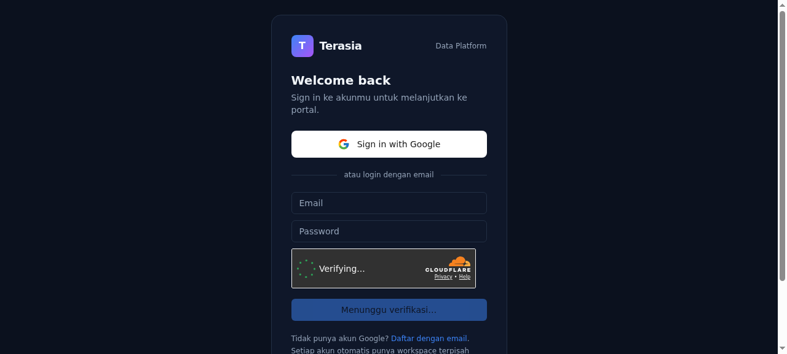
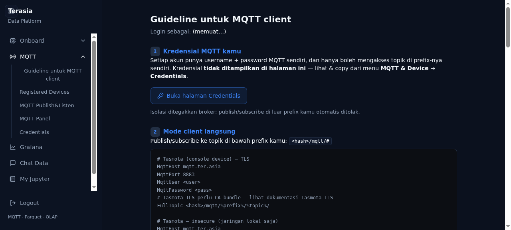
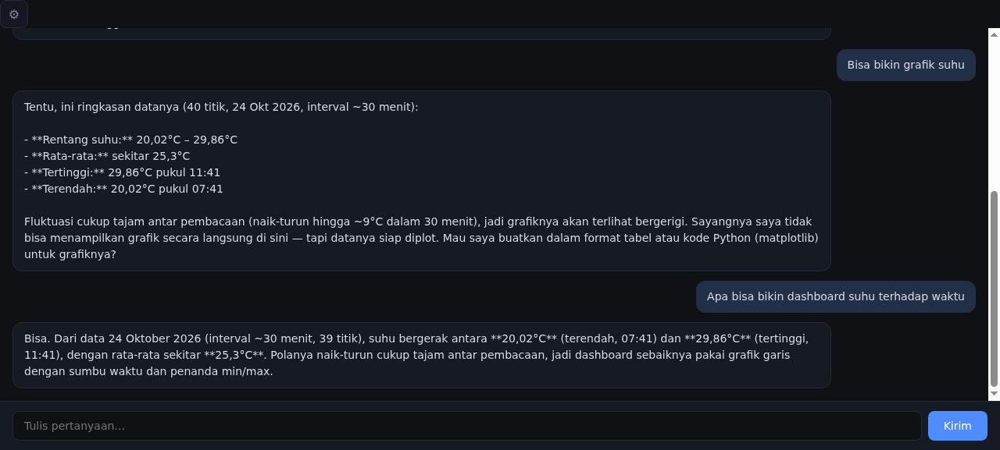
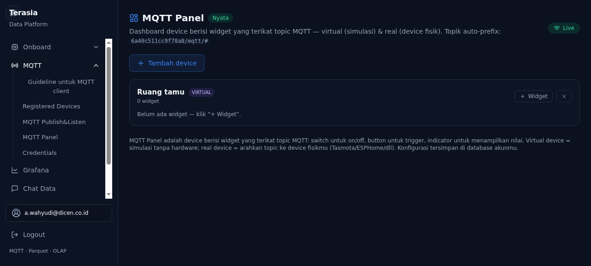

Gabungkan sensor, meter, kamera, dokumen, dan data bisnis dalam satu workspace — lalu cukup tanya dalam Bahasa Indonesia. Chatbot menjawab, membuatkan dashboard, memasang alert, sampai melatih dan men-deploy model AI ke perangkat edge.
Untuk pengelola gedung & fasilitas · Ruang publik · Industri ringan · Integrator sistem
Semua di atas: satu workspace, tanpa SQL, tanpa menunggu laporan.
MISI KAMI
Membuat data IoT berbicara — interaksi natural dengan data (LLM) dan advanced analytics yang menggabungkan IoT dengan data enterprise Anda: unstructured (SharePoint, Google Workspace, Confluence, OneNote, Notion, email, PDF), structured (warehouse, relational & NoSQL, time-series, spreadsheet, API), BYOD (bring your own data), dan model ML/DL — dalam satu workspace.
Dashboard dan alert multi-channel (email, Microsoft Teams, Slack, Telegram, webhook) dibuat langsung dari diskusi dengan chatbot. Onboard perangkat dari portal: ESP32, ESP8266, Raspberry Pi, dan varian lain — flash firmware & konfigurasi via browser.
Model AI dari awal atau transfer learning dari model repository kami — people counting, object detection, anomaly detection, predictive maintenance, face recognition (area privat/terkontrol) — deploy ke edge dari workspace yang sama, dengan OTA upgrade seluruh perangkat.




Konsumsi listrik naik — tapi tidak ada yang tahu panel atau lantai mana penyebabnya. Baru sadar setelah tagihan terbit, saat penghematan sudah terlambat.
Biaya: pemborosan yang tidak pernah terdeteksi.
Data berhenti di grafik. Tidak ada peringatan dini, tidak ada laporan rutin, tidak ada tindakan. Membaca grafik pun jadi pekerjaan sampingan yang tak selesai.
Biaya: tim data sendiri, atau proyek kustom yang mahal.
Anda butuh data keramaian pengunjung — tapi face recognition berisiko secara hukum (UU PDP) dan reputasi. Jadi keputusan soal ruang berjalan tanpa data.
Biaya: keputusan berdasar perasaan.
Platform untuk klien A tidak bisa dipakai untuk klien B. Setiap proyek membangun pipeline, dashboard, dan user management yang sama dari nol.
Biaya: margin termakan pekerjaan berulang.
Data IoT — sensor, meter, kamera — bertemu dengan data enterprise Anda: dokumen & unstructured (SharePoint, Google Workspace, Confluence, Notion, email, PDF) serta structured (warehouse, database relasional & NoSQL, time-series, spreadsheet, API). Dataset milik Anda sendiri (BYOD) pun bisa dibawa masuk sebagai sumber analitik.
Tanya dalam Bahasa Indonesia — "bandingkan konsumsi energi lantai 3 bulan ini dengan target di dokumen OKR". Chatbot menjawab dengan menggabungkan seluruh data tersebut, diperkaya model ML/DL untuk analitik lanjutan.
Hasil diskusi tidak berhenti sebagai jawaban: jadikan dashboard, pasang alert multi-channel (email, Microsoft Teams, Slack, Telegram, webhook), atau analitik rutin — langsung dari percakapan yang sama.
Bangun model ML/DL dari awal atau transfer learning dari model repository kami — people counting, object detection, anomaly detection, predictive maintenance — lalu deploy ke perangkat edge dari workspace yang sama. Pembaruan versi? OTA ke seluruh perangkat sekaligus.
Pantau kWh per panel dan per lantai secara live, lengkap dengan peringatan dini sebelum tagihan melonjak. Efisiensi berbasis angka — bukan tebakan di rapat bulanan.
"Berapa kWh lantai 3 minggu ini dibanding minggu lalu?" — chatbot menjawab dalam Bahasa Indonesia, dan dari diskusi yang sama dashboard, alert, atau laporan rutin dapat langsung dibuatkan.
Kepadatan pengunjung per zona tanpa menyimpan wajah — video diproses di perangkat, bukan dikirim ke cloud. Data keramaian tanpa risiko hukum.
Data dan pemrosesan bisa tetap di Indonesia — termasuk model AI-nya. Untuk banyak organisasi, kepatuhan ini alasan memilih, bukan sekadar syarat.
Arsip Anda disimpan sebagai format terbuka (Parquet) dan bisa diekspor penuh kapan saja. Janji sederhana: data Anda tetap milik Anda.
Satu platform multi-klien yang bisa di-deploy ulang untuk tiap klien — model B2B2B yang menekan biaya akuisisi, dan mengubah proyek kustom (CAPEX) menjadi langganan platform (OPEX).
Mulai dari model siap pakai — people counting, object detection, anomaly detection, predictive maintenance — lalu transfer learning dengan data Anda. Keahlian AI tingkat senior, tanpa merekrut tim AI.
Model dan aplikasi berjalan di perangkat edge — data sensitif tetap di lokasi. Versi baru? OTA upgrade ke seluruh armada perangkat dari satu tempat.
Kantor, kampus, hotel, gedung publik — kendalikan energi dan utilitas per area, dengan bukti angka untuk setiap keputusan efisiensi.
Mall, event, transportasi — pahami kepadatan dan arus pengunjung per zona, tanpa menyimpan identitas siapa pun.
Meter, mesin, dan utilitas produksi — deteksi anomali lebih awal, sebelum gangguan jadi downtime.
BMS, CCTV, IoT — satu platform untuk banyak klien, dengan deployment berulang di lingkungan pilihan klien.
Semua yang bisa dilakukan lewat chatbot juga bisa dilakukan secara programatis: perangkat publish telemetry lewat MQTT terenkripsi, dan seluruh kemampuan workspace dapat diakses lewat API portal. Tanpa membuat app di pihak ketiga, tanpa menunggu approval.
mosquitto_pub -h mqtt.ter.asia -p 8883 \
-u u_7f3a9c1d -P "$MQTT_PASSWORD" \
-t t/7f3a9c1d/energy/panel-3c \
-m '{"power_w": 1420, "kwh_total": 2184.7}'
TLS per perangkat · mTLS + client certificate untuk instalasi produksi · isolasi per tenant ditegakkan di layer data. Detail koneksi ada di portal.
Onboard langsung dari portal: pilih board — ESP32, ESP8266, Raspberry Pi, dan varian lainnya — sambungkan via USB, flash firmware dan konfigurasi langsung dari browser. Perangkat yang sudah ada (Tasmota, ESPHome) tinggal diarahkan ke satu pintu MQTT terenkripsi: kredensial per perangkat, izin per tenant.
Keluaran: perangkat online di daftar device Anda.
Dari pasang ke terlihat dalam hitungan menit: dashboard real-time untuk pemantauan, arsip otomatis untuk sejarah. Tanpa perlu membangun tim data sendiri.
Keluaran: konsumsi per panel terlihat — bukan sekadar total tagihan.
Ajak chatbot bicara dalam Bahasa Indonesia — atas data IoT Anda sendiri, diperkaya dokumen dan data bisnis di workspace yang sama. Jawaban datang dari data Anda, terisolasi dari tenant lain — bukan template, bukan tebakan.
Keluaran: jawaban atas pertanyaan bisnis, tanpa membaca grafik satu per satu.
Dari diskusi yang sama, minta chatbot membuatkan dashboard, alert multi-channel — email, Microsoft Teams, Slack, Telegram, webhook — atau laporan rutin. Masalah ketahuan sebelum tagihan atau kerusakan datang.
Keluaran: keputusan efisiensi dan perawatan berbasis bukti, tanpa konfigurasi yang panjang.
Butuh lebih dari dashboard? Latih model AI — dari awal atau transfer learning dari model repository kami — lalu deploy ke perangkat edge dari workspace yang sama. Pembaruan model atau firmware didorong lewat OTA ke seluruh perangkat.
Keluaran: kecerdasan berjalan di lokasi, armada perangkat selalu versi terbaru.
Data tersimpan dan diproses di Indonesia. Untuk organisasi dengan kebijakan residensi data, ini bisa dipenuhi — bukan janji di atas kertas.
Tidak ada pengenalan wajah di ruang publik, tidak ada video yang meninggalkan perangkat tanpa perlu. Isolasi antar tenant ditegakkan di layer data, bukan di tampilan.
TLS untuk perangkat gedung, mutual TLS dengan sertifikat per perangkat untuk instalasi serius. Setiap perangkat punya identitas dan batas izinnya sendiri.
Model SaaS per workspace dan per perangkat — perangkatnya pun hardware-agnostic (board komoditas, bukan hardware proprietary kami). Belanja infrastruktur dan tim AI berubah dari CAPEX menjadi OPEX. Skema harga mengikuti skala Anda — hubungi kami lewat portal.
Kami membuka slot pilot terpandu untuk organisasi pertama: implementasi penuh, langsung didampingi tim yang membangun platform-nya. Kebutuhan integrasi Anda (termasuk BMS/PLC) menjadi prioritas roadmap kami.
Agung Wahyudi — founder & engineer. Praktisi AI dan data engineering yang membangun Terasia end-to-end: dari pipeline data perangkat, arsip analytics, sampai antarmuka percakapan dan keamanan multi-tenant.
ESP32, ESP8266, dan Raspberry Pi (varian lain menyusul), plus perangkat yang sudah berjalan Tasmota atau ESPHome. Onboard dilakukan langsung dari portal — sambungkan via USB, flash firmware dan konfigurasi dari browser, tanpa install tool tambahan.
Di Indonesia, pada infrastruktur kami. Isolasi antar tenant ditegakkan di layer data (bukan hanya di tampilan), koneksi perangkat terenkripsi TLS/mTLS, dan arsip tersimpan sebagai format terbuka yang bisa Anda ekspor penuh kapan saja.
Tidak. Seluruh alur — bertanya, membuat dashboard, memasang alert — dilakukan lewat percakapan dalam Bahasa Indonesia. Untuk developer, semua kemampuan yang sama juga dapat diakses lewat MQTT dan API portal.
Unstructured: SharePoint, Google Workspace, Confluence, OneNote, Notion, email, PDF. Structured: warehouse, database relasional & NoSQL, time-series, spreadsheet, API. Dataset lain milik Anda (BYOD) juga bisa dibawa masuk ke analitik yang sama.
Integrasi gateway BMS/PLC (BACnet, Modbus) ada di roadmap kami dan menjadi prioritas bila kebutuhan Anda mencakupnya — kabari dari portal. Saat ini perangkat ESP32, ESP8266, Raspberry Pi, Tasmota, dan ESPHome didukung penuh, dan gateway industri menyusul mengikuti kebutuhan pilot.
Semua jawaban dihitung dari data tenant Anda sendiri dan bisa diverifikasi ke sumbernya — grafik, arsip parquet, hingga data mentah di file browser. Kami sengaja tidak membuat AI mengarang angka: pertanyaan di luar cakupan data Anda akan dijawab apa adanya, bukan ditebak.
Model berlangganan (SaaS) per workspace dan per perangkat — tanpa hardware proprietary yang harus dibeli dari kami. Skema harga mengikuti skala deployment Anda; hubungi kami lewat portal untuk penawaran.
Daftar di portal, onboard perangkat pertama, dan tanyakan sesuatu tentang datanya — semuanya bisa dicoba langsung. Untuk kebutuhan gedung, fasilitas, atau proyek integrator berskala lebih besar, hubungi kami dari portal.
Yang sudah berjalan kami tawarkan; yang sedang dibangun kami katakan sedang dibangun. Mulai dari satu meter hari ini — jawaban atas pertanyaan pertama Anda bisa jadi minggu ini.
Buka Portal Terasia